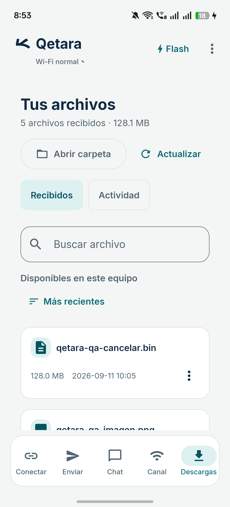
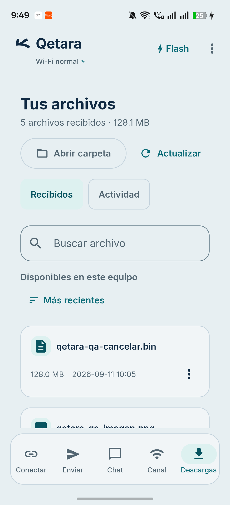
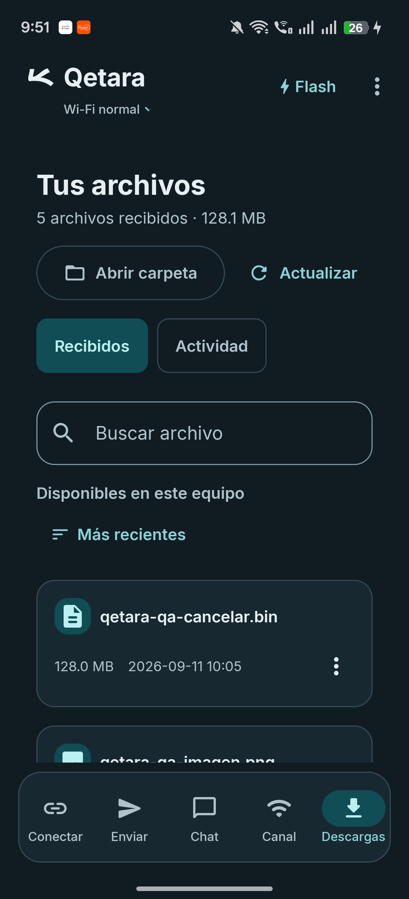
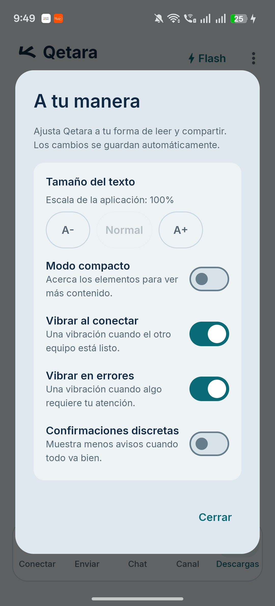

Un gris azulado, una misma identidad.
Compara la biblioteca antes y después del ajuste de superficies. El símbolo conserva su forma y su tinta original.
Biblioteca en claro. En pantallas pequeñas, la comparación se apila.
Antes
Biblioteca · Tema claro anterior

La captura se carga desde esta carpeta local.
Después
Biblioteca · Superficies gris azuladas

La captura se carga desde esta carpeta local.

La captura se carga desde esta carpeta local.
El mismo símbolo, otro fondo
La tinta azul y la geometría permanecen. La base pasa de crema a gris azulado.
Ilustraciones SVG, no capturas. Path original, viewport 108 × 108 y escala uniforme 0,65625 sobre el centro. La máscara redondeada es la misma en ambas muestras; el launcher puede aplicar otra.
Preferencias en claro
Una segunda vista para revisar el fondo, las tarjetas y las opciones del diálogo.
Mostrar captura de preferencias

La captura se carga desde esta carpeta local.